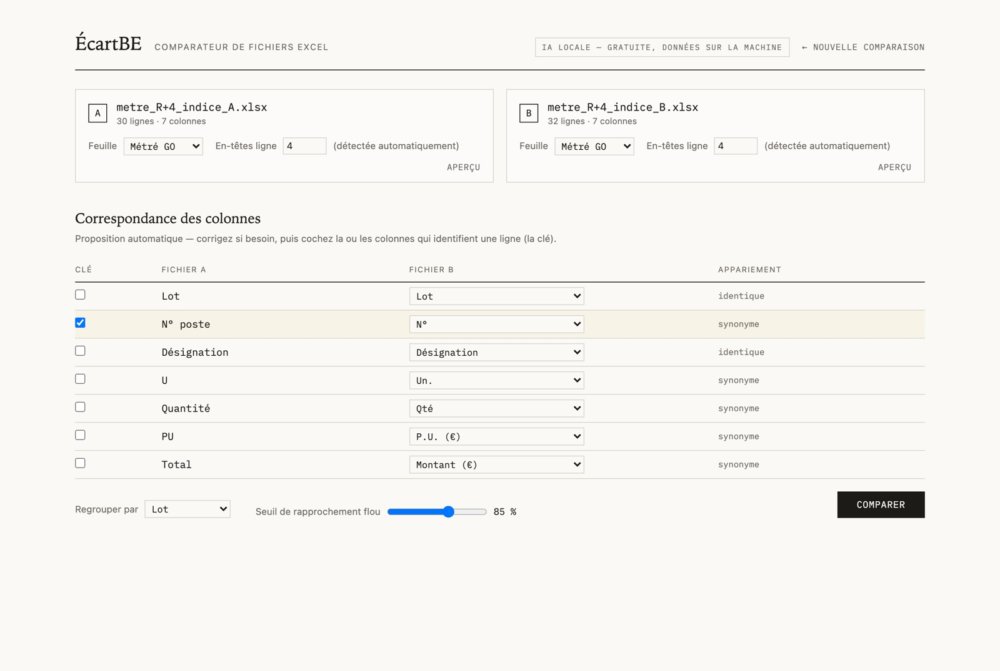
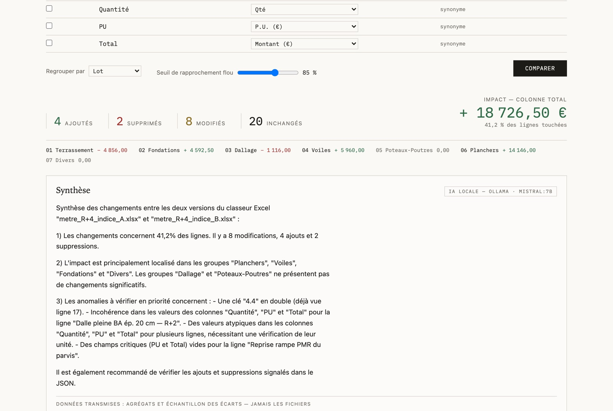

Import
Fichiers .xlsx, .xls ou .csv, multi-feuilles ; ligne d'en-têtes détectée même sous un cartouche, nombres français compris.
Étude de cas · 2026
Un comparateur de fichiers Excel pour bureaux d'études : deux versions d'un même métré, et l'outil montre exactement ce qui a changé, avec les écarts en euros, les anomalies et une synthèse en français clair.

Fonctionnement
docker compose up lance l'API et l'interface.
Fichiers .xlsx, .xls ou .csv, multi-feuilles ; ligne d'en-têtes détectée même sous un cartouche, nombres français compris.
« Qté » retrouvé avec « Quantité » : synonymes métier puis rapprochement flou, corrigeable dans l'interface.
Lignes ajoutées, supprimées, modifiées ; postes renumérotés retrouvés par similarité. 100 000 lignes en ~6 s.
Par règles, sans IA : doublons, cellules vides critiques, valeurs aberrantes, Quantité × PU ≠ Total.
API Anthropic/OpenAI, modèle local Ollama gratuit, ou repli par règles. L'IA ne reçoit que des agrégats, jamais les fichiers.
Rapport Excel en trois onglets (synthèse, écarts colorés, anomalies) et CSV prêt pour Excel en français.
Captures


Décisions techniques